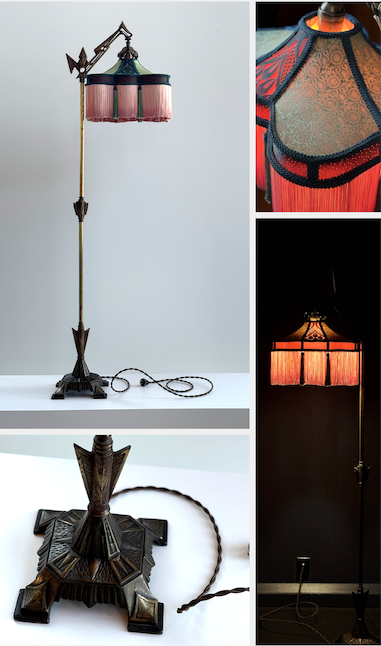
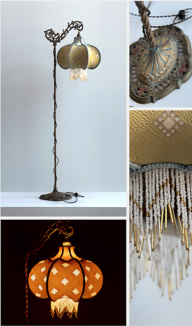
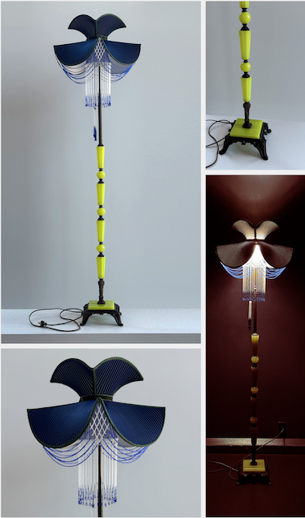
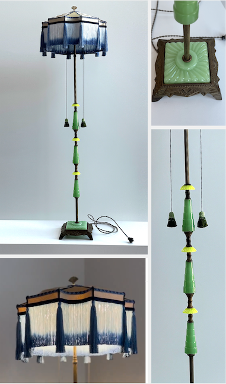
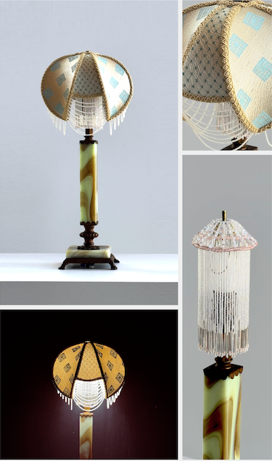

| Lamp: Bronze and Brass Bridge Floor Lamp Shade: Pink and Green Silk $1300 *-------------------------* Lamp: 1920s twisted bronze and brass bridge arm floor lamp. It has a single pull chain switch as well as decorative Art Deco filigree, spacer, and cast base. Measures 61″ inches high. Base is 9.5" x 95" inches. Rewired. Shade: This hand-stitched tent shade has hand-dyed pink and green base silk with pink silk lining. The bottom edge is finished with two layers hand-dyed rayon fringe and custom tassels. This one-of-a-kind shade emits a deep pink glow. Measures 9.5″H x 13″W x 10”D inches. |
Lamp: Cast Iron Bridge Floor Lamp Shade: Gold Silk with Vintage Bead Trim $1300 *-------------------------* Lamp: Early 1900s twisted cast iron bridge arm floor lamp with original polychrome finish over gold wash. It has a single pull chain switch as well as decorative Art Nouveau filigree on the arm. Measures 58.5″ inches high. Base is 11" x 9" inches. Rewired. Shade: This hand-stitched onion shade has champagne-colored base silk with custom-designed Queen Anne window cutouts backed with chiffon. The bottom edge is finished with a vintage bead trim of gold and glass beads. This one-of-a-kind shade emits a warm ambient glow. Measures 13.5″H x 11″W x 11”D in. |
Lamp: Uranium Glass Floor Lamp Shade: Blue Velvet with Czech Glass Beadwork $1300 *-------------------------* Lamp: Antique bronze and uranium glass 1920s floor lamp with a single pull-chain switch. Custom beaded tassel. Gives off a beautiful glow near a window and daylight light source or under a black light. Measures 69.5″ inches high. Base is 10" x 10" inches. Rewired. Shade: This three-part shade has a bead column, bottom shade, and crown. Hand-stitched with blue burnout velvet and a pale green silk lining, the custom Czech glass beadwork on the edges provides a window into the internal beading that cascades around the lamp column. Measures 11″H x 18″W x 18”D in. |
|---|---|---|
|  |  |  |
| Lamp: Jadeite and Uranium Glass Floor Lamp Shade: Champagne and Blue Silk $1300 *-------------------------* Lamp: Antique jadeite and uranium glass 1920s floor lamp with two pull-chain switches and original gold finish. Custom beaded tassels with vintage uranium glass bead details. Gives off a beautiful glow near a window and daylight light source or under a black light. Measures 63.5″ inches high with finial. Base is 9" x 9" inches. Rewired. Shade: This hand-stitched carousel shade has champagne-colored base silk with draped folds and navy blue accents. The bottom edge is finished with two layers hand-dyed rayon fringe. Measures 11″H x 18″W x 18”D inches. |
Lamp: Uranium Table Lamp Shade: Hand-printed Champagne Silk with Czech Glass Beadwork $975 *-------------------------* Lamp: 1920s Houze glass butterstick agate table lamp with cast bronze base and hardware. Uranium glass gives off a beautiful glow near a window and daylight light source or under a black light. Rewired with an inline switch. Measures 21″ high with shade. Two-part shade: This hand-stitched claw shade has a custom Queen Anne window print on a champagne-colored base silk. The custom Czech glass beadwork on the edges provides a window into the internal bead curtain that cascades around the lamp column. Measures 7″H x 8″W x 8”D inches. |
Lamp: Jadeite Glass Table Lamp Shade: Vintage Blue and Pink Silk with Czech Glass Beadwork $975 *-------------------------* Lamp: Antique jadeite Houze glass 1920s table lamp with two pull-chain switches and gilded gold finish. Custom beaded mini bead tassels. Measures 31″ inches high with shade. Rewired. Shade: This hand-stitched bell shade is crafted with vintage pink and blue patterned kimono silk. The custom Czech glass beadwork on the edges criss-crosses in the corners and features a floral drop bead accent. Measures 12″H x 15″W x 11”D inches. |
|  |  |

|
| Lamp: Jadeite and Bakelite Lamp Shade: Pink Silk with Czech Glass Beadwork $700 *-------------------------* Lamp: 1930s Houze glass Art Deco triangular jadeite and Bakelite lamp with socket switch. Measures 16.5″ inches high with shade. Rewired. Shade: This hand-stitched shade has vintage pink kimono base silk with shimmery glass bugle beadwork and hand-beaded Czech glass drop fringe. Measures 6.5″H x 8″W x 5”D inches. |
Lamp: Jadeite, Bronze, and Brass Double Candlestick Lamp Shade: Czech Glass Bead Shades $700 *-------------------------* Lamp: 1920s bronze and brass double candlestick lamp with jadeite glass accent. Measures 19″H x 11″W x 5.5”D. inches high. Rewired with inline switch. Shades: These hand-beaded shades feature a radial pattern at the crown and drop fringe in cobalt blue, persimmon red, and jade green. Each shade measures 6″H x 3″W x 3”D inches. |
Lamp: Brass Edwardian Sconces Shades: Amber-colored Czech glass bulb covers $700 *-------------------------* pair of brass Edwardian-era wall sconces. Each has gold wash and hand-painted cobalt details. Original pull switches. Each measures 11″H x 4.5″W x 5.5”D inches. Rewired as plug-in sconces. Shades: These hand-beaded lightbulb covers are fashioned from amber-colored Czech glass beads. Each shade measures 3.5″H x 3″W inches. |

|

|

|